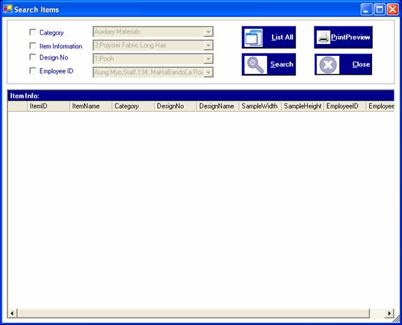
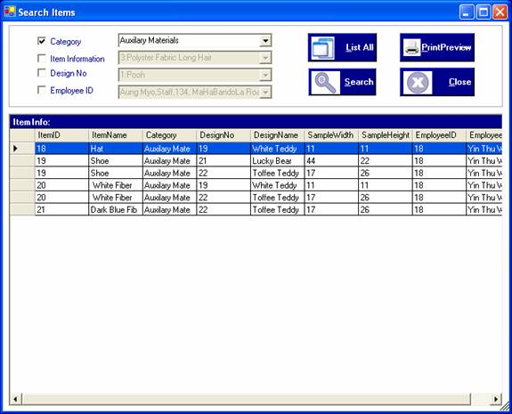
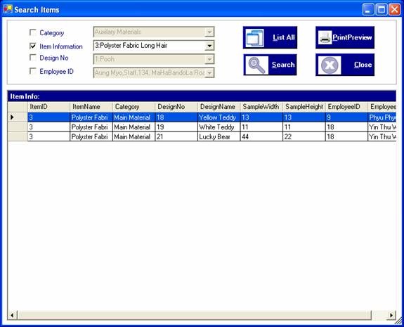
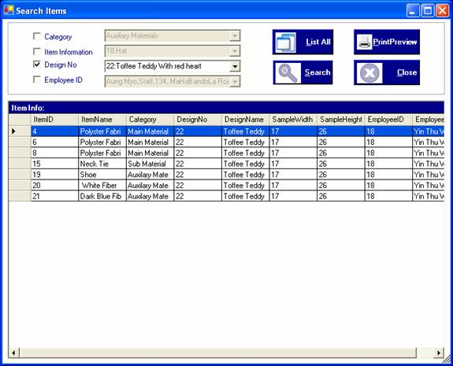
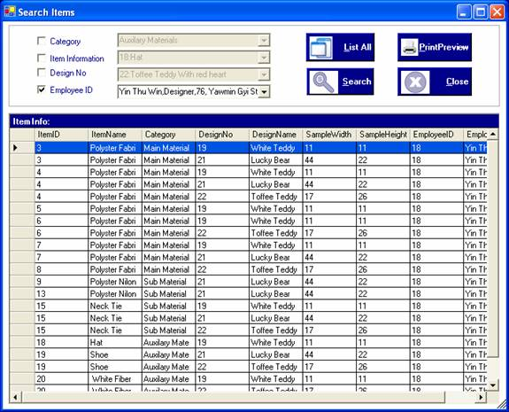
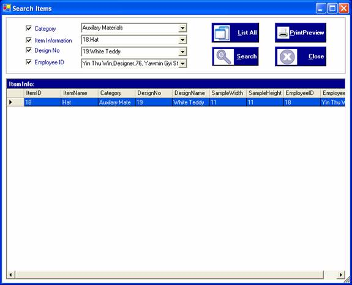
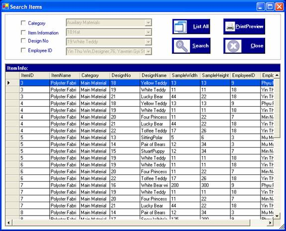
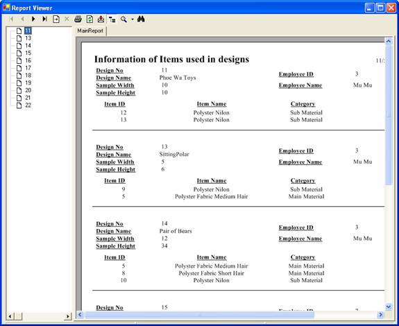

How to process Search Item
After you login the system as a adminstrator or manager, you can access "Search Item information" through "Search" menu. When click Search Item information form, "Search Items" form is appeared.

In this form, you can search by category, Item Information, DesignNo, employee ID . After choosing the options, click "Search" button or Alt+S.
To browse the category, choose the category in the combobox and click "Search" button or Alt+S.
To search by item name, choose item information from the comboboxand click "Search" button or Alt+S.
You can search the data by choosing both category and item information to see which items are included in which designs.
Then you can search by design no to know which items are being used.

You can also search by employee ID to see which designs are drawn by which employees.

To search for specific one, tick all boxes and choose the required data to get the specific information.

To show all records of purchasing, click "List All" button or Alt+L.

To view as a report format, click "Print Preview" button or Alt+P.

To close the form, click "Close" button or Alt+C.